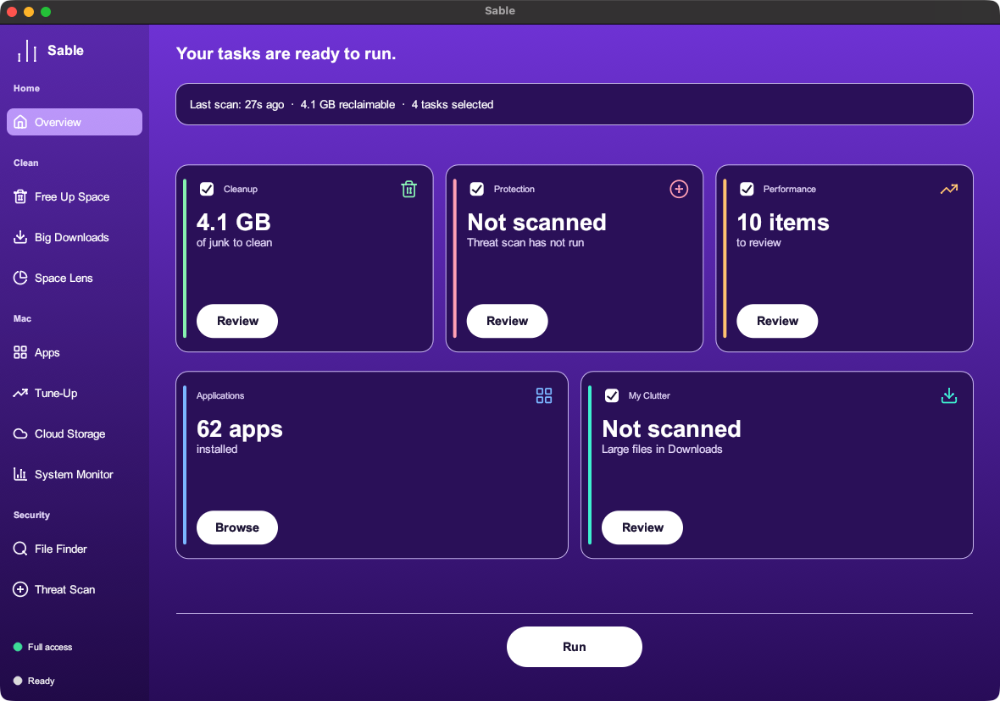

Sable maps your storage, safely cleans stale caches, and purges forgotten app leftovers. Everything routes to the macOS Trash first.

Every cleanup action routes through macOS Finder Trash. If you ever need a file back, simply open Trash and put it back.
Sable doesn't send telemetry, user tracking, or usage metrics. Completely offline operation with no accounts required.
Built with memory-safe multithreaded Rust. Traverses complex directory trees without pegging your CPU or memory.
Ten purpose-built utilities wrapped in a refined glassmorphic interface.
Isolates rebuildable user caches, Xcode DerivedData, Spotify offline cache, and crash logs with 1-click batch clearing.
One-scan disk hierarchy with real-time text filter, clickable breadcrumb navigation, and direct Finder integration.
Surveys hidden remnants left behind across Application Support, Group Containers, HTTPStorages, and WebKit.
Live background CPU and RAM telemetry sampling every 2 seconds to spot background spikes without keeping heavy profilers open.
Filters files over 50MB in Downloads with instant size-sorting to help clean accumulated disk hogs.
Audit background LaunchAgents, flush stale local DNS resolver caches, and trigger Spotlight index rebuilds.